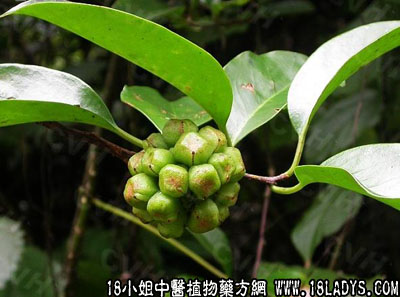

别名：钻地风、透地连珠。
植物名：江南五味子。
生长环境：本品为扳援藤本，生于山地疏林中或草地稍隐蔽处，或在山谷、水沟旁或路旁，零星生长，本种与另一种南五味子相似，但后者花的颜色为淡黄色，花梗比较长，结果时较小，果实直径1.5～3.5厘米，果梗可长1.3～1.5厘米，以外茎和根部的气味较淡，两种皆为药用植物。
分布：广东省各地、广西均产，数量虽然不多，但分布普遍。
入药部分：根、茎。
采集期：全年。
采购地点：从药材公司购入。
性味：性温、味微苦辛、气香。
功能：祛风、消肿、行气、止痛、活血、散瘀。
主治、用量和用法：1、风湿痛症，配伍用；2、跌打瘀肿，配伍用；3、风寒腹痛，吐泻：干用5至1两，清水煎服；4、产后积瘀肚痛，配伍用；5、月经前后肚痛，配伍用。
验方1：（养血调经丸方）黑老虎25斤、豆豉羌10斤、鸡血藤5斤、山白芷10斤、独脚球15斤、千斤拔10斤、制益母草15斤、天台乌10斤、共为细末，用老蜜为丸，如白豆大，每日服20碗，为一次或二次服。主治气血不足，月经不调，劳倦。
（方解）方中黑老虎、山白芷、天台乌祛寒散瘀；千斤拔、豆豉羌温经；鸡血藤、独脚球、益母草养血调经，兼能补虚，用于瘀血内阻，新血不生而致月经不调者，有效。
（方歌）养血调经黑虎君，豆豉羌同鸡血藤，山芷脚球千斤拔，台乌益鸟效如神。
验方2：（治风湿痛症方）黑老虎、枫香寄生、过江龙、入地金牛各5钱、清水三碗，煎成一碗服。
（方解）方中枫香寄生益肝；过江龙利湿；黑老虎、入地金牛止痛祛风，风湿为患而致痛，有效。
（方歌）风湿痛症过江龙，黑虎为君地牛逢，枫香寄生为佐药，祛风利湿力无穷。
验方3：（治产后瘀痛，经期前后肚痛方）黑老虎1两、独脚球5钱、益母草、清水三碗，煎成一碗，温服。
（方解）方中益母草活血；独脚球行血；黑老虎去瘀盛新，对产后血瘀不行与及经期前后肚痛，有活血宣通之效。
（方歌）经期肚痛产后瘀，皆由瘀血积难行，黑虎脚球益母草，宣通血脉效如神。
验方4：（治跌打肿痛方）黑老虎1两、刘寄奴5钱、大还魂5钱、小还魂5钱、血见愁5钱、鸡骨香5钱、清水四碗，煎成一碗，冲酒服。
（方解）方中黑老虎、刘寄奴、血见愁散瘀消肿；鸡骨香祛风止痛；大还魂、小还魂散瘀止痛，冲酒服，其效更显。
（方歌）跌打肿疼痛难当，黑虎寄奴骨香帮，大小还魂同入药，血见愁来不用慌。
参考资料：《广州市中医验方选集第一集》多宝卫生所介绍万应跌打丸方：黑老虎4两、寮刁竹2两、大慌两、香付2两，为末，炼蜜为丸，每重三钱，内服外搽均好。
《广州常用草药验方集解》跌打验伤经验方：黑老虎一份、白酒三份，同浸。如用药末浸制，则一星期可用。入用原植物浸制，则须经一个月始可应用。将药酒以适度力量往来擦伤处，如是新伤，伤处即现出鲜明之瘀斑，如被拳击、瘀斑呈现拳形；入被掌击，瘀斑则呈现掌形；如是旧伤，伤处则现出暗瘀斑影；无伤则无瘀斑出现。
（方解）此方传自西南老中医，据说有吊瘀外出作用。本品经验上又可用于跌打瘀伤，为内服外敷药；刀伤可作为外治止血药；产后恶露未清用为化瘀药。